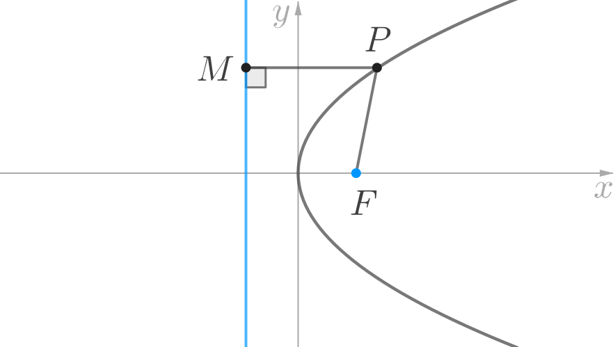
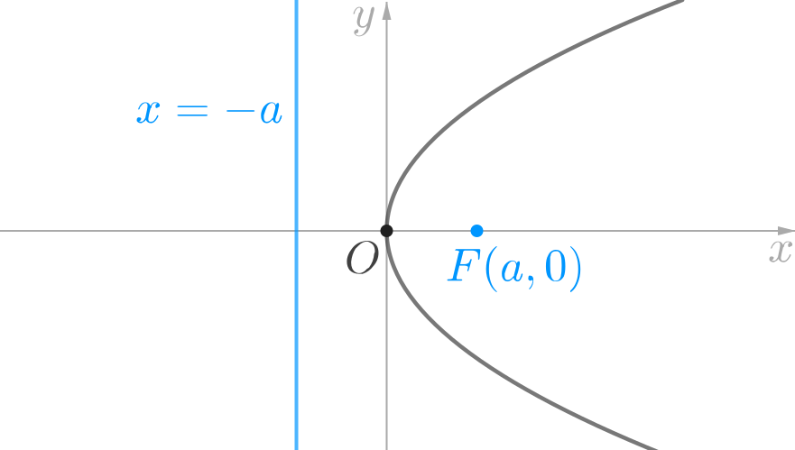
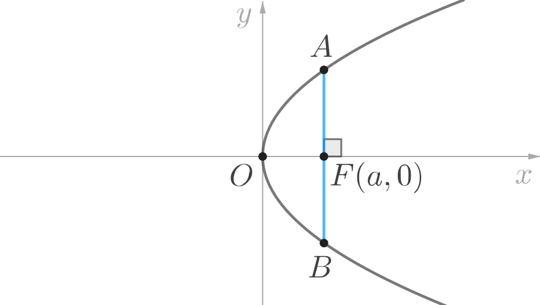

After the ellipse and hyperbola, we will now move on to the next conic section, namely the parabola.
The ellipse and hyperbola, both come in many different shapes. Two ellipses (or two hyperbolas) are similar to each other if and only if they have the same eccentricity.
Unlike the ellipse and the hyperbola, however, the circle and the parabola are both precise shapes. Just as every circle is similar to every other circle; every parabola is also similar to every other parabola.
As usual, rather than defining the parabola as a conic section, we will once again work with an alternative algebraic definition of the parabola so that we can investigate it in the framework of coordinate geometry.
The plane curve represented by each of the following Cartesian equations is a parabola.
By convention, we will assume that is positive. We shall refer to these four equations as the standard equations of the parabola.
The parabola represented by the equation can be sketched on the Cartesian plane as follows:
The graph of is obtained by reflecting the above graph about the -axis. Hence, it is a parabola that opens towards the left.
The parabola represented by the equation can be sketched on the Cartesian plane as follows:
The graph of is obtained by reflecting the above graph about the -axis. Hence, it is a parabola that opens downwards.
In this book we will only investigate parabolas represented by the standard equations.
A parabola has only one axis of symmetry, as shown in the below diagram. This line is called the axis of the parabola. The point, at which its axis intersects the parabola is called the vertex of the parabola.
If the parabola is represented by any one of the standard equations, then the origin of the Cartesian plane coincides with the vertex of the parabola.
Given any parabola, there exists a unique straight line called the directrix and a unique point, (not on the straight line), called the focus, such that the distance from any point lying on the parabola to the point is equal to the perpendicular distance of from the straight line.  In terms of the above diagram, we can say that:
The focus of a parabola always lies on its axis. And, the directrix of the parabola is always perpendicular to its axis. For a parabola represented by any of the standard equations, the focus and the directrix, both lie at a distance from the vertex of the parabola, but on opposite sides of the vertex. For instance, the focus and directrix of the parabola represented is shown in the following diagram.  The focus and directrix of the parabolas represented by the other standard equations can be similarly determined.
The line segment passing through the focus of the parabola and perpendicular to its axis, and whose end points lie on the parabola is called the latus rectum of the parabola.  In the above diagram, is the latus rectum of the parabola. It can be proved that, if the distance between the vertex and focus of a parabola is then the length of the latus rectum of the parabola is
Example 1:
Determine the coordinates of the focus, the equation of the directrix, and the length of the latus rectum of the parabola represented by the equation
Solution:
Let us first re-write the equation of the parabola in standard form:
It follows that the focus lies on the positive -axis at
The directrix is
The length of the latus rectum is that is
Example 2:
Determine the coordinates of the focus, the equation of the directrix, and the length of the latus rectum of the parabola represented by the equation
Solution:
Let us first re-write the equation of the parabola in standard form:
It follows that the focus lies on the negative -axis at
The directrix is
The length of the latus rectum is that is
Example 3:
Suppose that a line segment is the latus rectum of a parabola, where is located at while is located at Given that the vertex of this parabola coincides with the origin, determine the equation of this parabola.
Solution:
From the given information, we can deduce the following points. The latus rectum is such that,
(sketch the points and if the above deductions are not obvious).
It follows that the corresponding parabola’s axis is along the -axis and it opens downwards. Hence the equation of the required parabola is of the form
But we know that the length of the latus rectum is Hence, Therefore, the equation of the required parabola is
Tangent at the point
We can find the equation of the tangent to the parabola in the usual way, by first determining its slope as the derivative of at and then using the point-slope form of the equation of a line.
The result is easy to remember in the following form.
| Parabola | Tangent |
|---|---|
In general, the equation of the tangent to a parabola, ellipse or hyperbola at the point can be obtained from the corresponding standard equation by replacing:
Condition for Tangency
We can prove that a line will be tangent to a parabola if the following condition is satisfied.
| Parabola | Condition |
|---|---|
Example 4:
Determine the point at which the tangents to the parabola at the points and intersect each other.
Solution:
The equation of the given parabola in standard form is,
The equation of the tangent to the parabola at the point is,
Hence, for the given parabola, the tangent at the point is Which is the same as,
Solving the simultaneous equations of the two tangents, we find that they intersect at the point
Suppose that is the latus rectum of a parabola whose vertex coincides with the origin of the Cartesian plane, and whose focus lies on the positive -axis. If the length of the segment is units, then determine the equation of the parabola.
The axis of a parabola lies along the -axis and its vertex coincides with the origin. If one end point of the latus rectum is and the point lies on this parabola, then determine the possible values of
Determine the equations of the two lines tangent to the parabola, at the end points of its latus rectum.
If is tangent to both the parabolas, and then determine the value of